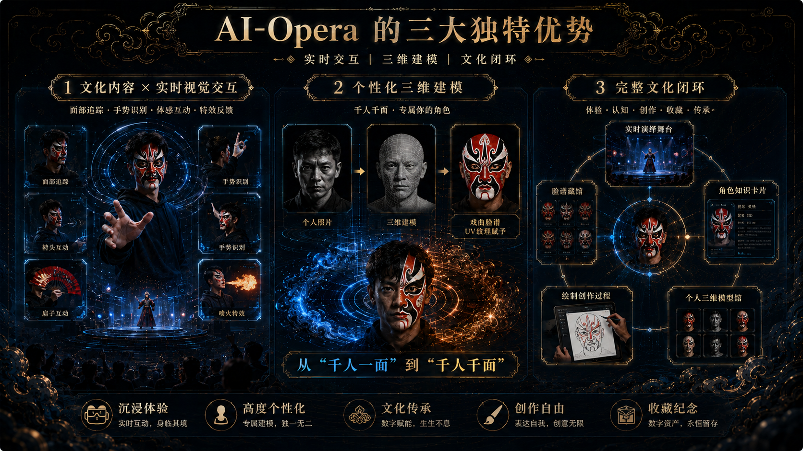
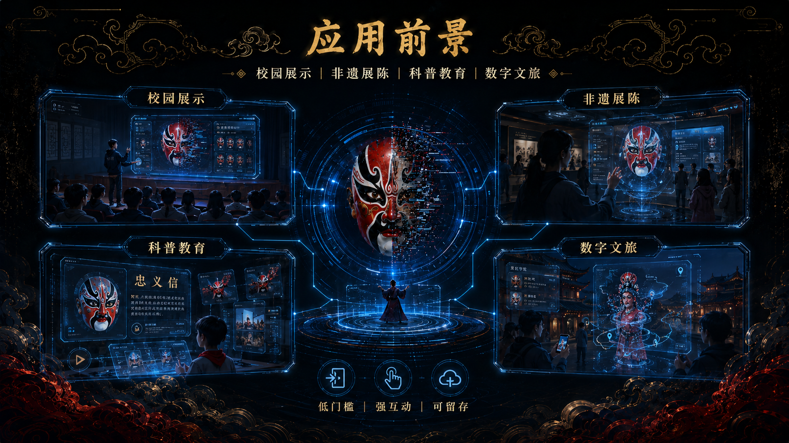
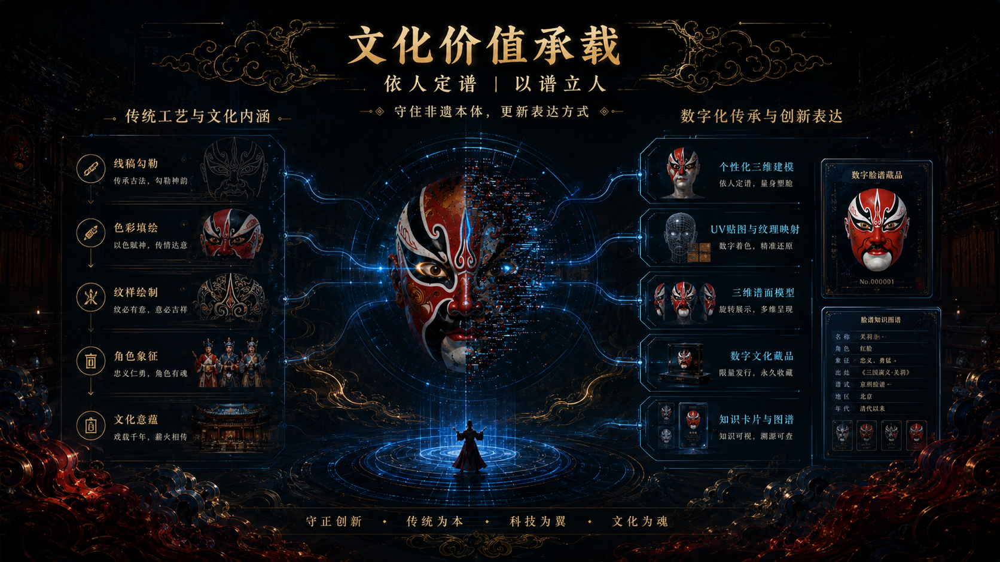

<template id="ai-opera-template">
  <div id="ai-opera-film" data-composition-id="ai-opera" data-width="1920" data-height="1080">
    <div class="backdrop" data-layout-ignore>
      <div class="grid"></div>
      <div class="noise"></div>
      <div class="vignette"></div>
      <div class="scanline-global"></div>
      <div class="gold-edge edge-top"></div>
      <div class="gold-edge edge-bottom"></div>
      <div class="particle-field" aria-hidden="true"></div>
    </div>

    <section id="intro-open" class="clip intro" data-start="0" data-duration="2" data-track-index="1">
      <div class="intro-hud hud-ring ring-a"></div>
      <div class="intro-hud hud-ring ring-b"></div>
      <div class="intro-core"></div>
      <div class="intro-copy">
        <h1>AI-Opera 智能川剧变脸</h1>
        <p>实时交互 | 三维建模 | 文化闭环</p>
      </div>
    </section>

    <section id="scene-advantages" class="clip poster-scene scene-advantages" data-scene="advantages" data-start="2" data-duration="10" data-track-index="2">
      <div class="camera" data-layout-allow-overflow>
        
      </div>
      <div class="scene-hud center-hud"></div>
      <div class="scan-sweep" data-layout-allow-overflow></div>
      <div class="bottom-particles"></div>
    </section>

    <section id="transition-one" class="clip transition transition-one" data-start="12" data-duration="1" data-track-index="3">
      <div class="dim"></div>
      <div class="blue-wipe" data-layout-allow-overflow></div>
      <div class="center-flash"></div>
    </section>

    <section id="scene-applications" class="clip poster-scene scene-applications" data-scene="applications" data-start="13" data-duration="10" data-track-index="4">
      <div class="camera" data-layout-allow-overflow>
        
      </div>
      <svg class="connection-lines" viewBox="0 0 1920 1080" aria-hidden="true">
        <path d="M610 374 C760 410, 875 470, 955 540" />
        <path d="M1310 374 C1160 410, 1045 470, 965 540" />
        <path d="M610 706 C760 670, 875 610, 955 540" />
        <path d="M1310 706 C1160 670, 1045 610, 965 540" />
      </svg>
      <div class="energy-pulse pulse-a"></div>
      <div class="energy-pulse pulse-b"></div>
      <div class="bottom-particles"></div>
    </section>

    <section id="transition-two" class="clip transition transition-two" data-start="23" data-duration="1" data-track-index="5">
      <div class="gold-cloud cloud-left" data-layout-allow-overflow></div>
      <div class="gold-cloud cloud-right" data-layout-allow-overflow></div>
      <div class="vertical-scan" data-layout-allow-overflow></div>
    </section>

    <section id="scene-cultural" class="clip poster-scene scene-cultural" data-scene="cultural" data-start="24" data-duration="12" data-track-index="6">
      <div class="camera" data-layout-allow-overflow>
        
      </div>
      <div class="gold-side-glow"></div>
      <div class="blue-data-flow"></div>
      <div class="face-digital-stream"></div>
      <div class="outro-dark"></div>
    </section>

    <section id="outro-title" class="clip outro" data-start="34" data-duration="2" data-track-index="7" data-layout-ignore>
      <div class="outro-copy">
        <h2>AI-Opera 智能川剧变脸</h2>
        <p>让非遗活在当下，让文化留在未来</p>
      </div>
      <div class="fade-black"></div>
    </section>

    <style>
      #ai-opera-film {
        position: relative;
        width: 1920px;
        height: 1080px;
        overflow: hidden;
        background: #04070d;
        color: #f2e8d5;
        font-family: "Microsoft YaHei", "SimHei", "Noto Sans CJK SC", "PingFang SC", sans-serif;
      }

      .backdrop,
      .intro,
      .poster-scene,
      .transition,
      .outro {
        position: absolute;
        inset: 0;
        overflow: hidden;
      }

      .backdrop {
        background:
          radial-gradient(circle at 50% 0%, rgba(32, 215, 232, 0.14), transparent 28%),
          radial-gradient(circle at 12% 82%, rgba(217, 45, 32, 0.16), transparent 30%),
          radial-gradient(circle at 88% 82%, rgba(215, 168, 74, 0.14), transparent 28%),
          #04070d;
      }

      .grid {
        position: absolute;
        inset: 0;
        opacity: 0.12;
        background-image:
          linear-gradient(rgba(32, 215, 232, 0.24) 1px, transparent 1px),
          linear-gradient(90deg, rgba(32, 215, 232, 0.2) 1px, transparent 1px);
        background-size: 80px 80px;
        mask-image: radial-gradient(circle at center, black 0%, black 62%, transparent 95%);
      }

      .noise {
        position: absolute;
        inset: 0;
        opacity: 0.11;
        background-image:
          repeating-linear-gradient(0deg, rgba(242, 232, 213, 0.14) 0, rgba(242, 232, 213, 0.14) 1px, transparent 1px, transparent 5px);
        mix-blend-mode: screen;
      }

      .vignette {
        position: absolute;
        inset: 0;
        opacity: 0.25;
        background: radial-gradient(circle at 50% 48%, transparent 48%, rgba(0, 0, 0, 0.78) 100%);
        pointer-events: none;
      }

      .scanline-global {
        position: absolute;
        inset: 0;
        opacity: 0.14;
        background: repeating-linear-gradient(180deg, transparent 0, transparent 5px, rgba(32, 215, 232, 0.16) 6px);
        pointer-events: none;
      }

      .gold-edge {
        position: absolute;
        left: 120px;
        right: 120px;
        height: 1px;
        opacity: 0.46;
        background: linear-gradient(90deg, transparent, rgba(215, 168, 74, 0.86), transparent);
        box-shadow: 0 0 18px rgba(215, 168, 74, 0.32);
      }

      .edge-top {
        top: 36px;
      }

      .edge-bottom {
        bottom: 38px;
      }

      .particle-field,
      .bottom-particles {
        position: absolute;
        inset: 0;
        pointer-events: none;
      }

      .particle,
      .rise-particle {
        position: absolute;
        width: 4px;
        height: 4px;
        border-radius: 50%;
        background: #20d7e8;
        box-shadow: 0 0 14px rgba(32, 215, 232, 0.82);
      }

      .rise-particle.gold {
        background: #d7a84a;
        box-shadow: 0 0 14px rgba(215, 168, 74, 0.74);
      }

      .intro {
        z-index: 20;
        background: #04070d;
      }

      .intro-copy {
        position: absolute;
        inset: 0;
        display: flex;
        flex-direction: column;
        align-items: center;
        justify-content: center;
        gap: 22px;
        text-align: center;
        z-index: 4;
      }

      .intro-copy h1,
      .outro-copy h2 {
        margin: 0;
        color: #ffe3a4;
        font-size: 82px;
        line-height: 1.1;
        font-weight: 900;
        letter-spacing: 0;
        text-shadow: 0 0 30px rgba(215, 168, 74, 0.44), 0 6px 22px rgba(0, 0, 0, 0.86);
      }

      .intro-copy p,
      .outro-copy p {
        margin: 0;
        color: #f2e8d5;
        font-size: 30px;
        line-height: 1.35;
        font-weight: 650;
        letter-spacing: 0;
        text-shadow: 0 0 18px rgba(32, 215, 232, 0.32);
      }

      .hud-ring,
      .scene-hud,
      .energy-pulse {
        position: absolute;
        border: 1px solid rgba(32, 215, 232, 0.58);
        border-radius: 50%;
        box-shadow: inset 0 0 28px rgba(32, 215, 232, 0.16), 0 0 28px rgba(32, 215, 232, 0.18);
        pointer-events: none;
      }

      .intro-hud {
        left: 50%;
        top: 50%;
        width: 470px;
        height: 470px;
        margin-left: -235px;
        margin-top: -235px;
      }

      .ring-b {
        width: 610px;
        height: 610px;
        margin-left: -305px;
        margin-top: -305px;
        border-color: rgba(215, 168, 74, 0.36);
      }

      .intro-core {
        position: absolute;
        left: 50%;
        top: 50%;
        width: 18px;
        height: 18px;
        margin-left: -9px;
        margin-top: -9px;
        border-radius: 50%;
        background: #20d7e8;
        box-shadow: 0 0 70px rgba(32, 215, 232, 0.9), 0 0 120px rgba(215, 168, 74, 0.32);
      }

      .poster-scene {
        z-index: 5;
        background: #04070d;
      }

      .camera {
        position: absolute;
        inset: 0;
        transform-origin: 50% 50%;
      }

      .camera img {
        position: absolute;
        inset: 0;
        width: 100%;
        height: 100%;
        object-fit: cover;
        object-position: center center;
      }

      .center-hud {
        left: 50%;
        top: 50%;
        width: 440px;
        height: 440px;
        margin-left: -220px;
        margin-top: -220px;
        opacity: 0.18;
      }

      .scan-sweep,
      .blue-wipe {
        position: absolute;
        top: 0;
        bottom: 0;
        width: 180px;
        background: linear-gradient(90deg, transparent, rgba(32, 215, 232, 0.46), transparent);
        filter: blur(2px);
        pointer-events: none;
      }

      .scan-sweep {
        left: -220px;
        opacity: 0.22;
      }

      .transition {
        z-index: 25;
        pointer-events: none;
      }

      .transition .dim {
        position: absolute;
        inset: 0;
        background: rgba(0, 0, 0, 0.55);
      }

      .blue-wipe {
        left: -220px;
        width: 260px;
        opacity: 0.95;
      }

      .center-flash,
      .vertical-scan {
        position: absolute;
        left: 50%;
        top: 50%;
        transform: translate(-50%, -50%);
        background: radial-gradient(circle, rgba(32, 215, 232, 0.72), transparent 62%);
      }

      .center-flash {
        width: 560px;
        height: 560px;
      }

      .connection-lines {
        position: absolute;
        inset: 0;
        fill: none;
        stroke: rgba(32, 215, 232, 0.34);
        stroke-width: 2;
        stroke-dasharray: 16 18;
        opacity: 0;
        pointer-events: none;
      }

      .energy-pulse {
        left: 50%;
        top: 50%;
        width: 410px;
        height: 410px;
        margin-left: -205px;
        margin-top: -205px;
        opacity: 0;
      }

      .pulse-b {
        width: 560px;
        height: 560px;
        margin-left: -280px;
        margin-top: -280px;
        border-color: rgba(215, 168, 74, 0.3);
      }

      .gold-cloud {
        position: absolute;
        top: 0;
        width: 54%;
        height: 100%;
        background:
          radial-gradient(circle at 26% 20%, rgba(215, 168, 74, 0.2), transparent 18%),
          radial-gradient(circle at 55% 52%, rgba(215, 168, 74, 0.18), transparent 25%),
          linear-gradient(90deg, rgba(5, 7, 13, 0.92), rgba(215, 168, 74, 0.14), transparent);
        filter: blur(3px);
      }

      .cloud-left {
        left: -55%;
      }

      .cloud-right {
        right: -55%;
        transform: scaleX(-1);
      }

      .vertical-scan {
        width: 90px;
        height: 1200px;
        background: linear-gradient(90deg, transparent, rgba(32, 215, 232, 0.72), transparent);
        filter: blur(4px);
      }

      .gold-side-glow {
        position: absolute;
        left: 0;
        top: 0;
        width: 42%;
        height: 100%;
        opacity: 0;
        background: radial-gradient(circle at 20% 58%, rgba(215, 168, 74, 0.22), transparent 42%);
        pointer-events: none;
      }

      .blue-data-flow {
        position: absolute;
        right: 0;
        top: 0;
        width: 45%;
        height: 100%;
        opacity: 0;
        background-image:
          linear-gradient(90deg, transparent 0, rgba(32, 215, 232, 0.18) 48%, transparent 100%),
          repeating-linear-gradient(0deg, transparent 0, transparent 28px, rgba(32, 215, 232, 0.18) 29px);
        mask-image: linear-gradient(90deg, transparent, black 20%, black 82%, transparent);
        pointer-events: none;
      }

      .face-digital-stream {
        position: absolute;
        left: 50%;
        top: 245px;
        width: 255px;
        height: 430px;
        opacity: 0;
        background:
          repeating-linear-gradient(90deg, rgba(32, 215, 232, 0.5) 0, rgba(32, 215, 232, 0.5) 2px, transparent 2px, transparent 18px),
          repeating-linear-gradient(0deg, rgba(32, 215, 232, 0.26) 0, rgba(32, 215, 232, 0.26) 1px, transparent 1px, transparent 17px);
        mix-blend-mode: screen;
        mask-image: linear-gradient(90deg, transparent, black 20%, black 72%, transparent);
        pointer-events: none;
      }

      .outro-dark {
        position: absolute;
        inset: 0;
        opacity: 0;
        background: radial-gradient(circle at center, rgba(0, 0, 0, 0.16), rgba(0, 0, 0, 0.72));
        pointer-events: none;
      }

      .outro {
        z-index: 30;
        pointer-events: none;
      }

      .outro-copy {
        position: absolute;
        inset: 0;
        display: flex;
        flex-direction: column;
        align-items: center;
        justify-content: center;
        gap: 20px;
        text-align: center;
      }

      .outro-copy h2 {
        font-size: 74px;
      }

      .fade-black {
        position: absolute;
        inset: 0;
        background: #04070d;
        opacity: 0;
      }

    </style>

    <script src="../vendor/gsap.min.js"></script>
    <script>
      window.__timelines = window.__timelines || {};

      const DURATION = 36;
      const root = document.querySelector('[data-composition-id="ai-opera"]');
      const particleField = root.querySelector(".particle-field");

      function mulberry32(seed) {
        return function () {
          let t = seed += 0x6d2b79f5;
          t = Math.imul(t ^ (t >>> 15), t | 1);
          t ^= t + Math.imul(t ^ (t >>> 7), t | 61);
          return ((t ^ (t >>> 14)) >>> 0) / 4294967296;
        };
      }

      const rand = mulberry32(20260515);

      function makeParticle(parent, className, x, y, size, colorClass) {
        const dot = document.createElement("span");
        dot.className = `${className}${colorClass ? ` ${colorClass}` : ""}`;
        dot.style.left = `${x}px`;
        dot.style.top = `${y}px`;
        dot.style.width = `${size}px`;
        dot.style.height = `${size}px`;
        parent.appendChild(dot);
        return dot;
      }

      for (let i = 0; i < 90; i += 1) {
        makeParticle(
          particleField,
          "particle",
          Math.round(rand() * 1920),
          Math.round(rand() * 1080),
          1.5 + rand() * 3.5,
          i % 5 === 0 ? "gold" : ""
        );
      }

      root.querySelectorAll(".bottom-particles").forEach((field, fieldIndex) => {
        const localRand = mulberry32(9000 + fieldIndex);
        for (let i = 0; i < 26; i += 1) {
          makeParticle(
            field,
            "rise-particle",
            Math.round(localRand() * 1760 + 80),
            Math.round(localRand() * 150 + 860),
            2 + localRand() * 4,
            i % 4 === 0 ? "gold" : ""
          );
        }
      });

      function setScene(scene, vars) {
        gsap.set(`.${scene}`, { opacity: vars.opacity ?? 0 });
        gsap.set(`.${scene} .camera`, {
          x: vars.x ?? 0,
          y: vars.y ?? 0,
          scale: vars.scale ?? 1,
        });
      }

      function focusScene(tl, scene, at, duration, vars) {
        tl.to(`.${scene}`, { opacity: vars.opacity ?? 1, duration: Math.min(duration, 0.55), ease: "power2.out" }, at);
        tl.to(
          `.${scene} .camera`,
          {
            x: vars.x ?? 0,
            y: vars.y ?? 0,
            scale: vars.scale ?? 1,
            duration,
            ease: "power2.inOut",
          },
          at
        );
      }

      setScene("scene-advantages", { opacity: 0, scale: 1.06 });
      setScene("scene-applications", { opacity: 0, scale: 1.05 });
      setScene("scene-cultural", { opacity: 0, scale: 1.04 });

      const tl = gsap.timeline({ paused: true });

      tl.set(".intro-copy, .intro-core, .intro-hud", { opacity: 0 });
      tl.fromTo(".intro-core", { scale: 0.2, opacity: 0 }, { scale: 1, opacity: 1, duration: 0.7, ease: "power2.out" }, 0);
      tl.fromTo(".intro-hud", { scale: 0.7, opacity: 0 }, { scale: 1, opacity: 0.7, duration: 0.9, ease: "power2.out", stagger: 0.12 }, 0.1);
      tl.fromTo(".intro-copy", { y: 24, opacity: 0 }, { y: 0, opacity: 1, duration: 0.75, ease: "power3.out" }, 0.65);
      tl.to(".intro", { opacity: 0, duration: 0.45, ease: "power2.in" }, 1.65);

      focusScene(tl, "scene-advantages", 2, 2, { opacity: 1, scale: 1.0, x: 0, y: 0 });
      tl.fromTo(".scene-advantages .camera", { scale: 1.06 }, { scale: 1.0, duration: 2, ease: "power2.out" }, 2);
      focusScene(tl, "scene-advantages", 4, 2.5, { scale: 1.35, x: 410, y: 10 });
      focusScene(tl, "scene-advantages", 6.5, 2.5, { scale: 1.32, x: 0, y: 18 });
      focusScene(tl, "scene-advantages", 9, 2, { scale: 1.35, x: -410, y: 5 });
      focusScene(tl, "scene-advantages", 11, 1, { scale: 1.05, x: 0, y: 0 });
      tl.fromTo(".scene-advantages .center-hud", { opacity: 0, rotation: 0 }, { opacity: 0.18, rotation: 180, duration: 10, ease: "none" }, 2);
      tl.fromTo(".scene-advantages .scan-sweep", { x: 0, opacity: 0 }, { x: 2200, opacity: 0.22, duration: 2, ease: "power1.inOut", repeat: 4 }, 2.2);
      tl.fromTo(".transition-one", { opacity: 0 }, { opacity: 1, duration: 0.15 }, 12);
      tl.to(".scene-advantages", { filter: "brightness(0.58)", duration: 0.35, ease: "power1.out" }, 12);
      tl.fromTo(".transition-one .blue-wipe", { x: 0 }, { x: 2200, duration: 0.9, ease: "power2.inOut" }, 12.05);
      tl.fromTo(".transition-one .center-flash", { opacity: 0, scale: 0.55 }, { opacity: 0.75, scale: 1.15, duration: 0.45, ease: "power2.out" }, 12.35);
      tl.to(".transition-one", { opacity: 0, duration: 0.2 }, 12.82);
      tl.set(".transition-one", { opacity: 0 }, 13);
      tl.set(".scene-advantages", { opacity: 0 }, 13);

      focusScene(tl, "scene-applications", 13, 2, { opacity: 1, scale: 1.0, x: 0, y: 0 });
      tl.fromTo(".scene-applications .camera", { scale: 1.05 }, { scale: 1.0, duration: 2, ease: "power2.out" }, 13);
      focusScene(tl, "scene-applications", 15, 2, { scale: 1.32, x: 330, y: 150 });
      focusScene(tl, "scene-applications", 17, 2, { scale: 1.32, x: -330, y: 150 });
      focusScene(tl, "scene-applications", 19, 2, { scale: 1.32, x: 330, y: -160 });
      focusScene(tl, "scene-applications", 21, 1.5, { scale: 1.32, x: -330, y: -160 });
      focusScene(tl, "scene-applications", 22.5, 0.5, { scale: 1.03, x: 0, y: 0 });
      tl.to(".connection-lines", { opacity: 0.85, duration: 0.6, ease: "power2.out" }, 13.3);
      tl.fromTo(".connection-lines path", { strokeDashoffset: 80 }, { strokeDashoffset: 0, duration: 2.8, ease: "none", repeat: 2 }, 13.3);
      tl.fromTo(".energy-pulse", { opacity: 0, scale: 0.78 }, { opacity: 0.4, scale: 1.1, duration: 1.6, ease: "power1.inOut", stagger: 0.15, repeat: 5, yoyo: true }, 13.2);
      tl.fromTo(".transition-two", { opacity: 0 }, { opacity: 1, duration: 0.12 }, 23);
      tl.to(".scene-applications", { filter: "brightness(0.62)", duration: 0.32, ease: "power1.out" }, 23);
      tl.to(".transition-two .cloud-left", { x: 920, duration: 0.7, ease: "power2.inOut" }, 23);
      tl.to(".transition-two .cloud-right", { x: -920, duration: 0.7, ease: "power2.inOut" }, 23);
      tl.fromTo(".transition-two .vertical-scan", { opacity: 0, scaleX: 0.35 }, { opacity: 0.9, scaleX: 1, duration: 0.45, ease: "power2.out" }, 23.35);
      tl.to(".transition-two", { opacity: 0, duration: 0.22 }, 23.8);
      tl.set(".transition-two", { opacity: 0 }, 24);
      tl.set(".scene-applications", { opacity: 0 }, 24);

      focusScene(tl, "scene-cultural", 24, 2, { opacity: 1, scale: 1.16, x: 0, y: 18 });
      tl.fromTo(".scene-cultural .camera", { scale: 1.04 }, { scale: 1.16, duration: 2, ease: "power2.out" }, 24);
      focusScene(tl, "scene-cultural", 26, 2.5, { scale: 1.32, x: 360, y: 0 });
      focusScene(tl, "scene-cultural", 28.5, 2.5, { scale: 1.2, x: 18, y: 0 });
      tl.to(".scene-cultural .camera", { x: -18, duration: 1.25, ease: "sine.inOut", yoyo: true, repeat: 1 }, 28.7);
      focusScene(tl, "scene-cultural", 31, 2, { scale: 1.32, x: -360, y: 0 });
      focusScene(tl, "scene-cultural", 33, 1, { scale: 1.04, x: 0, y: 0 });
      tl.to(".gold-side-glow", { opacity: 0.8, duration: 0.8, ease: "power2.out" }, 26);
      tl.to(".gold-side-glow", { opacity: 0.22, duration: 0.5 }, 28.4);
      tl.to(".face-digital-stream", { opacity: 0.18, duration: 0.7, ease: "power2.out" }, 28.5);
      tl.to(".blue-data-flow", { opacity: 0.54, duration: 0.8, ease: "power2.out" }, 31);
      tl.to(".scene-cultural .outro-dark", { opacity: 1, duration: 1.2, ease: "power2.out" }, 34);
      tl.fromTo(".outro-copy", { opacity: 0, y: 24, scale: 0.98 }, { opacity: 1, y: 0, scale: 1, duration: 0.7, ease: "power3.out" }, 34.15);
      tl.to(".outro-copy h2", { textShadow: "0 0 46px rgba(215,168,74,0.75), 0 6px 22px rgba(0,0,0,0.9)", duration: 1.2, ease: "sine.inOut" }, 34.4);
      tl.to(".fade-black", { opacity: 1, duration: 0.5, ease: "power2.in" }, 35.5);

      tl.fromTo(".particle", { opacity: 0.15, y: 0 }, { opacity: 0.55, y: -40, duration: 6, ease: "sine.inOut", repeat: 5, yoyo: true }, 0);
      tl.fromTo(".rise-particle", { opacity: 0, y: 70 }, { opacity: 0.62, y: -130, duration: 4.2, ease: "sine.out", repeat: 3, yoyo: true, stagger: 0.02 }, 2);
      tl.to(".ring-a", { rotation: 260, duration: DURATION, ease: "none" }, 0);
      tl.to(".ring-b", { rotation: -220, duration: DURATION, ease: "none" }, 0);

      window.__timelines["ai-opera"] = tl;
    </script>
  </div>
</template>
